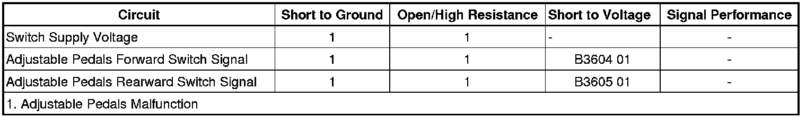

B3604
DTC B3604 or B3605
Diagnostic Instructions
* Perform the Diagnostic System Check - Vehicle (Initial Inspection and Diagnostic Overview) prior to using this diagnostic procedure.
* Review Strategy Based Diagnosis (Initial Inspection and Diagnostic Overview) for an overview of the diagnostic approach.
* Diagnostic Procedure Instructions (Initial Inspection and Diagnostic Overview)provides an overview of each diagnostic category.
DTC Descriptors
DTC B3604 01
- Adjustable Foot Pedal Forward Switch Circuit Short to Battery
DTC B3605 01
- Adjustable Foot Pedal Rearward Switch Circuit Short to Battery
Diagnostic Fault Information

Circuit/System Description
Battery voltage is supplied at all times to the adjustable pedal switch from the memory seat module (MSM). When the pedals switch is pressed, battery voltage is applied through the switch contacts and the switch signal circuit to the MSM. The MSM then commands the adjustable pedals motor to move in response to the switch signal.
Conditions for Running the DTC
The memory seat module must be powered.
Conditions for Setting the DTC
* If the adjustable pedals switch circuit is active in one direction and the switch for the opposite direction is pressed, this DTC will set.
* A short to voltage on a switch signal circuit.
Action Taken When the DTC Sets
Manual and memory adjustable pedals operation will be disabled.
Conditions for Clearing the DTC
* The current DTC will clear and set the code to history, 3 seconds after the fault is no longer present and the power mode changes to OFF then back to ACC or RUN.
* The history DTC will clear after 50 consecutive fault-free ignition cycles have occurred.
Diagnostic Aids
The MSM may be referenced as the Driver Position Module.
Reference Information
Schematic Reference
Adjustable Pedal Schematics ([1][2]Electrical Diagrams)
Connector End View Reference
Component Connector End Views (Connector Views)
Description and Operation
Adjustable Pedals Description and Operation (Description and Operation)
Electrical Information Reference
* Circuit Testing (Component Tests and General Diagnostics)
* Connector Repairs (Component Tests and General Diagnostics)
* Testing for Intermittent Conditions and Poor Connections (Component Tests and General Diagnostics)
* Wiring Repairs (Component Tests and General Diagnostics)
Scan Tool Reference
Control Module References (Programming and Relearning)for scan tool information
Circuit/System Verification
Ignition ON, observe the scan tool Pedal Switch parameters while pressing the adjustable pedal switch in both directions. The readings should change between Inactive and Active for both directions.
Circuit/System Testing
1. Disconnect the harness connector at the adjustable pedal switch.
2. Ignition ON, verify that both scan tool Pedal Switch parameters are Inactive.
• If not Inactive, test the appropriate switch signal circuit for a short to voltage. If the circuit tests normal, replace the memory seat module.
3. If the circuits tests normal, replace the adjustable pedal switch.
Component Testing
1. Ignition OFF, disconnect the harness connector at the adjustable pedal switch.
2. Test for infinite resistance between the signal terminal A and the B+ terminal C with the switch in the open position.
• If not the specified value, replace the adjustable pedal switch.
3. Test for less than 2 ohms of resistance between the signal terminal A and the B+ terminal C with the switch in the closed position.
• If greater than the specified range, replace the adjustable pedal switch.
4. Test for infinite resistance between the signal terminal B and the B+ terminal C with the switch in the open position.
• If not the specified value, replace the adjustable pedal switch.
5. Test for less than 2 ohms of resistance between the signal terminal B and the B+ terminal C with the switch in the closed position.
• If greater than the specified range, replace the adjustable pedal switch.
Repair Instructions
Perform the Diagnostic Repair Verification (Verification Tests) after completing the diagnostic procedure.
* Brake and Accelerator Pedal Adjuster Switch Replacement (Service and Repair)
* Control Module References (Programming and Relearning)for the memory seat module replacement and setup procedures